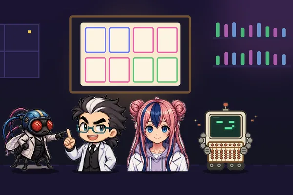

본문 제1장 ~ 제9장
1준비 중
1제1장
준비 중
2준비 중
2제2장
준비 중
3준비 중
3제3장
준비 중
4준비 중
4제4장
준비 중
5준비 중

6제6장 · 프롬프트 엔지니어링 활용
프롬프트로 창업하기 — 카페와 쇼핑몰에 일을 맡기는 8요소 프레임워크
AI에게 일을 시킬 때 적어야 할 여덟 가지를 카페와 쇼핑몰 예로 하나씩 채워 봅니다. 짧게 물으면 왜 뻔한 답이 나오는지, 조건을 적으면 무엇이 달라지는지 직접 켜고 끄며 확인합니다.
7준비 중
7제7장
준비 중
8준비 중
8제8장
준비 중
9준비 중
9제9장
준비 중
부록 3~4편 예정
A준비 중
A부록 A
준비 중
B준비 중
B부록 B
준비 중
C준비 중
C부록 C
준비 중
D준비 중
D부록 D (예정)
준비 중
이렇게 읽어요
1. 3줄 요약부터
페이지마다 "처음 오신 분께" 상자에 무엇을 · 왜 · 업무에서는 어떻게 쓰는지가 있습니다. 영어 약어는 그 상자에서 풀어 줍니다.
2. 직접 바꿔 보기
칸마다 연구실 식구들의 대화가 "이걸 눌러 봐"라고 알려 줍니다. 실험은 모두 설명용 모형이며 실제 AI를 부르지 않습니다.
3. 수식은 조수가 대신 물어요
숫자가 나오는 칸에는 수학을 어려워하는 조수가 질문하고, 학교 수학과 숫자 예시로 풀어 줍니다. 코드·수식을 몰라도 됩니다.
등장인물
박사해설자 · 심판
조수(하루)실험 진행 · 숫자 발표 · 수식 질문
초파리 연구원의심하는 쪽 · "이걸 눌러 봐"
주판봇확신하는 쪽 · 주판으로 셈